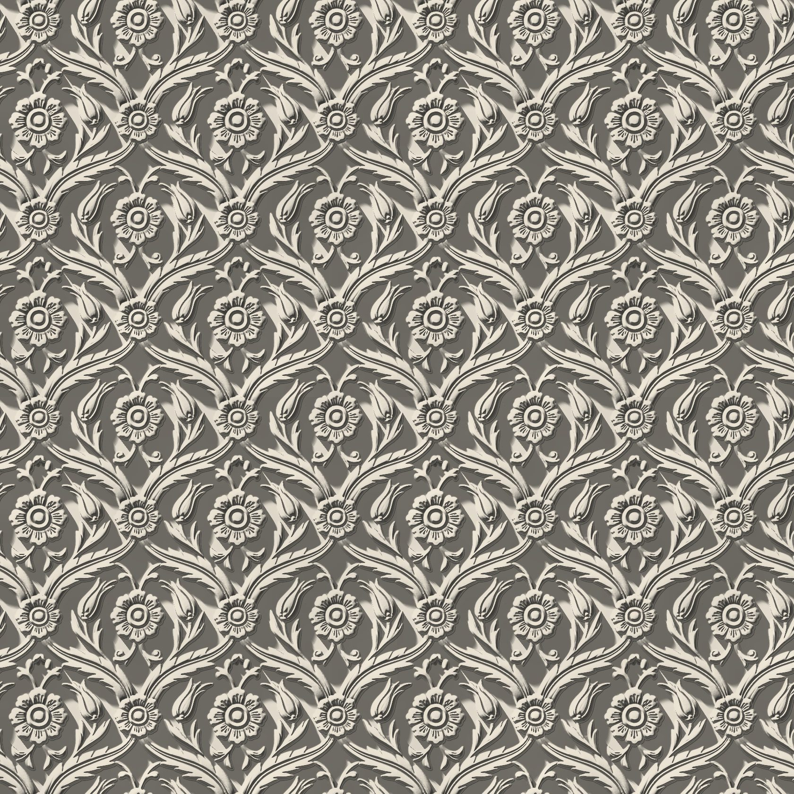
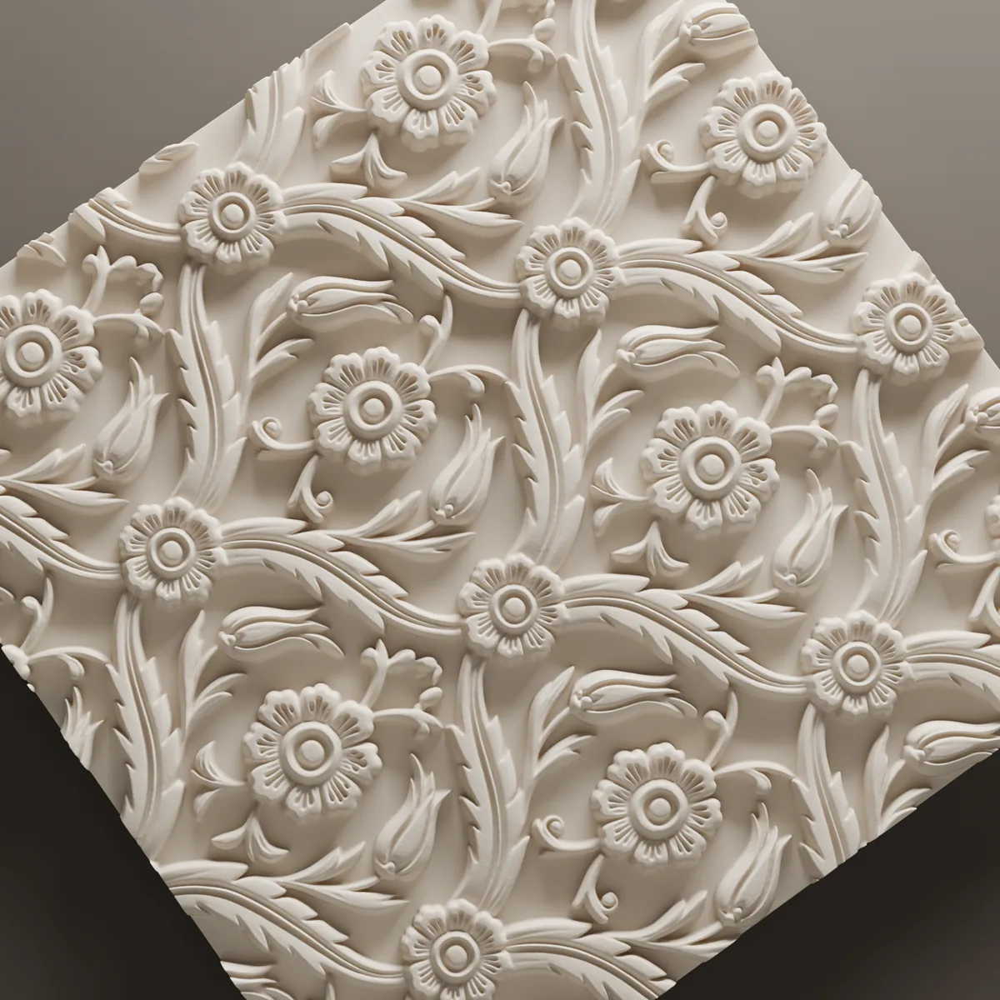
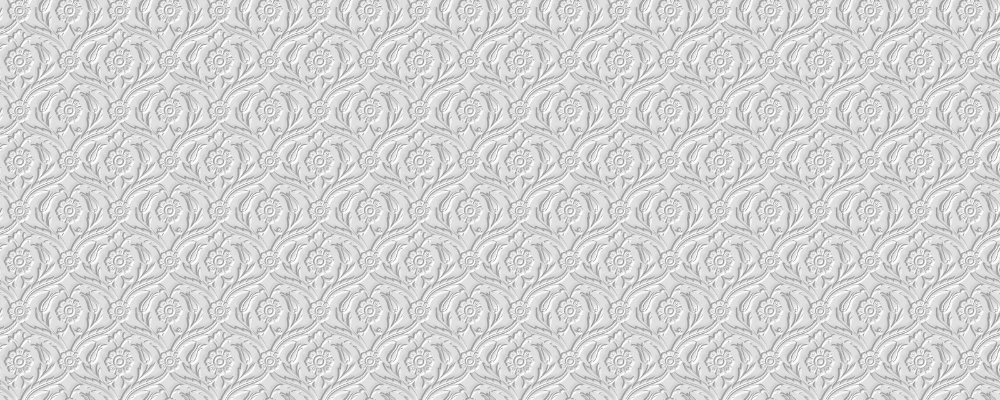
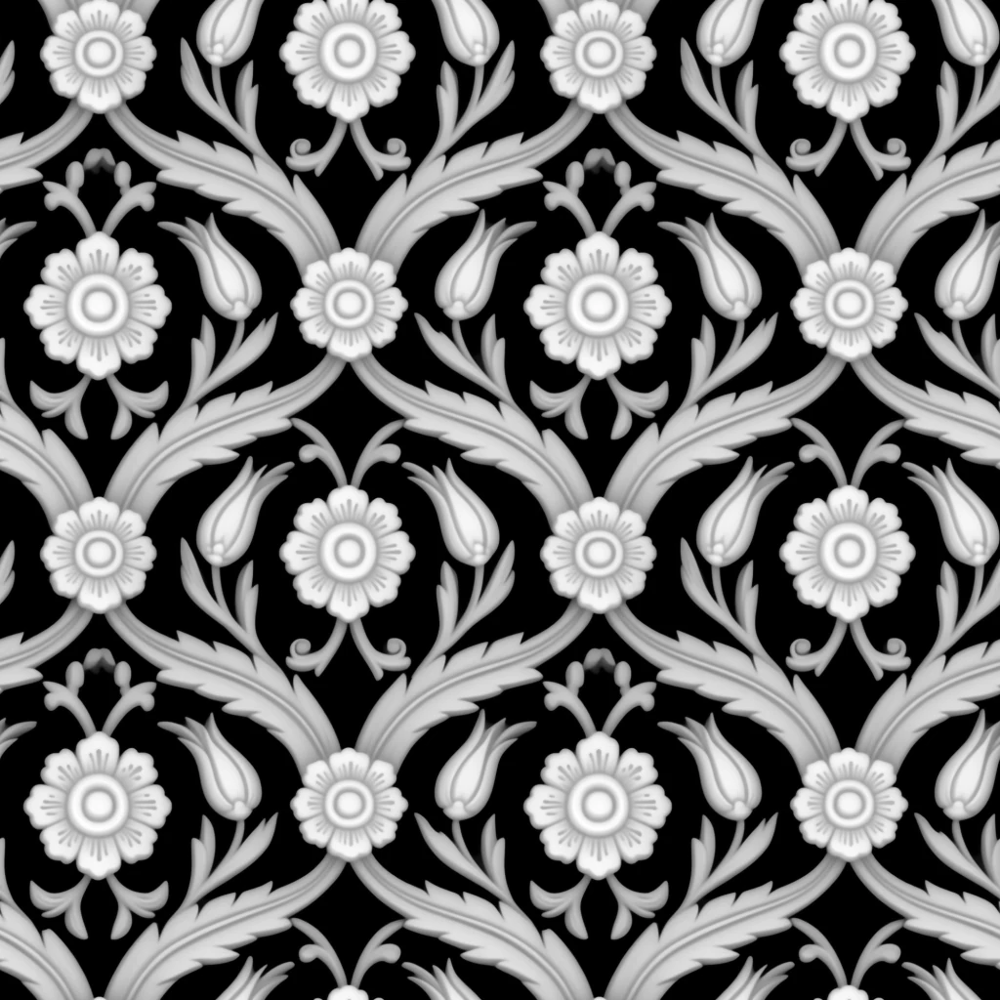

Fioritura
A floral field we drew in the vocabulary of Ottoman tile ornament: tulip buds, rosettes and serrated leaves, linked by winding stems. The pattern repeats every 300 mm and runs across the panel edges unbroken.

- Size
- 600 × 600 mm
- Relief
- 16 mm
- Layout
- Continuous field, repeat every 300 mm
- Material
- Lumina PMAG™ (polymer-modified composite gypsum)
- Surface
- Paint-ready, or with an artisan finish



The pattern
Fioritura gathers the plants of Ottoman tile ornament: tulip buds, rosettes with raised centres and the serrated saz leaf. Winding stems tie them together, so the motifs read as one interlaced network rather than as separate flowers.
The relief reaches 16 mm. The rosette centres and the spines of the leaves stand forward while the ground sits back, and that difference is enough for even the smallest leaf to cast its own shadow.
How it reads in light
The image at the top of the page is in live light. With the light at the side, the rosettes catch it like points and the stems are drawn by the shadow between them. In head-on light the shadows shorten and the surface becomes a pale, fine texture; the flowers only separate as you come close.
On the wall
Fioritura is a field layout. Laid side by side, the 600 × 600 mm panels do not break the pattern at their edges: the stems pass from one panel into the next and the wall reads as a single floral field. With a 300 mm repeat it can carry the same texture across a broad wall, a niche or a column face. Where the pattern is cut at the edges of the wall is decided together on the layout drawing.
To see how this design would sit on your wall, send the wall dimensions.